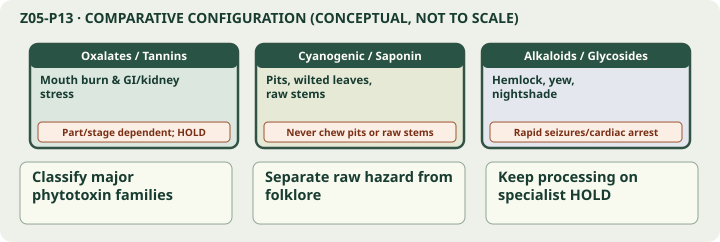

Z05-P13 · Wild foods and poisonous lookalikes · New manuscript
Natural Plant Toxins: Oxalates, Cyanogenic Compounds, Tannins and Alkaloids
Understand major classes of plant secondary compounds so raw-toxicity, dose, and preparation boundaries are never oversimplified.
When it applies · Phytotoxicology awareness across wild plants, seeds, bark, and roots.
Equipment · USDA ARS Poisonous Plant Research and Poison Control reference.

Actions
- Understand major plant toxin groups: insoluble calcium oxalate needles (jack-in-the-pulpit, skunk cabbage) cause instant oral swelling; cyanogenic glycosides (Prunus pits/wilted leaves, raw elderberry stems) release cyanide; condensed tannins (raw acorns) cause GI/renal irritation; and cardiac/neurotoxic alkaloids (Taxus, Cicuta, Conium, Solanum) can be rapidly fatal.[B10, B11, B21]
- Recognize that toxin concentrations vary dramatically by plant part, maturity, drought stress, frost damage, and genetics—safe fruit pulp can sit adjacent to toxic seeds, leaves, or roots.[B10, B21]
- Treat traditional ethnobotanical leaching or cooking mentions as historical context only—never as validated modern clinical preparation clearances—maintaining WITHHELD_HOLD.[B21, B24]
Failure recognition · Assuming an entire plant is uniform because one part is historically noted leads to poisoning from toxic roots, wilted leaves, or pits.[B10, B21]
Verify · Part-specific toxicity and absence of validated home detoxification guarantees remain explicit across every profile.[B21, B24]
Stop or change course · Stop and call Poison Control (1-800-222-1222) immediately for oral burning, swelling, vomiting, confusion, or heart symptoms after any plant contact.[B09, B10]
Evidence and editorial notes
- B09 · National Capital Poison Center · First Aid for Poisonings (Current web edition)
- Section: When to call 911; get help from poison experts · Conditions: Suspected poisoning in the United States
Support: Call 911 for collapse, seizure, trouble breathing or inability to wake. Otherwise promptly call Poison Help at 1-800-222-1222.
Limitations: Use route- and substance-specific advice. Do not wait for symptoms or collect unknown material if doing so risks exposure or delays care. · Conflicting evidence: Conditions are recorded in the A03 audit.
Editorial note: Mandatory Z05 poison-response escalation. · Specialist reviewer: Clinical toxicologist / Poison Center
Primary source · checked 2026-11-25 - B10 · National Capital Poison Center · Poisonous Plants and Berries Overview (Current web edition)
- Section: Poisonous plants, berries, and dose-dependent pediatric risk · Conditions: Household, trailside, and wild berries, seeds, and foliage
Support: Many attractive wild berries, seeds, and roots contain cardiac glycosides, alkaloids, or oxalates that cause rapid toxicity, especially in children.
Limitations: Never sample unknown plants; recognition and consumption suitability remain separate decisions. · Conflicting evidence: None noted.
Editorial note: Separates recognition from consumption. · Specialist reviewer: Clinical toxicologist and botanist
Primary source · checked 2026-11-25 - B11 · CDC · Water Hemlock Poisoning — Maine, 1992 (1994)
- Section: Maine case description and editorial note · Conditions: Suspected water-hemlock ingestion
Support: Water hemlock ingestion can cause severe poisoning including seizures. Suspected poisoning needs prompt emergency or poison-centre advice.
Limitations: The case concerns Cicuta maculata. It cannot identify a plant outdoors or establish Conium toxin mechanism, dose, or onset. · Conflicting evidence: Conditions are recorded in the A03 audit.
Editorial note: Mandatory Z05 lethal Apiaceae stop rule. · Specialist reviewer: Botanist and medical toxicologist
Primary source · checked 2026-11-25 - B21 · USDA Forest Service · Ethnobotany, Wild Foods, and Conservation Precautions (Current web edition)
- Section: Ethnobotanical limits, preparation hazards, and permit rules · Conditions: Wild plant/fungus gathering ethics and toxicity processing limits
Support: Some traditionally used plants contain raw toxins (cyanogenic glycosides, oxalates, tannins, alkaloids) that require verified preparation or remain unsafe for sensitive groups.
Limitations: Historical ethnobotanical mentions are never modern clinical safety clearances; maintain consumption status WITHHELD until qualified review. · Conflicting evidence: None noted.
Editorial note: Enforces recognition-vs-consumption separation. · Specialist reviewer: Ethnobotanist and food toxicologist
Primary source · checked 2026-11-25 - B24 · National Capital Poison Center · Mushroom poisoning: prevention and response (Current reference)
- Section: Prevention tips and what to do after ingestion · Conditions: Wild mushroom recognition and suspected ingestion
Support: Lookalikes can fool observers. Avoid eating wild fungi on unverified identification and seek poison-centre advice promptly after suspected ingestion.
Limitations: Reject folk tests and generated-image clearance as an editorial restriction. Preparation cannot substitute for poison risk or identification review. · Conflicting evidence: Conditions are recorded in the A03 audit.
Editorial note: Enforces Z05 fail-closed edibility rule. · Specialist reviewer: Botanist, mycologist, and clinical toxicologist
Primary source · checked 2026-11-25
Source lineage · New manuscript (Z05 P19-C phytotoxicology) · Classification · New manuscript.